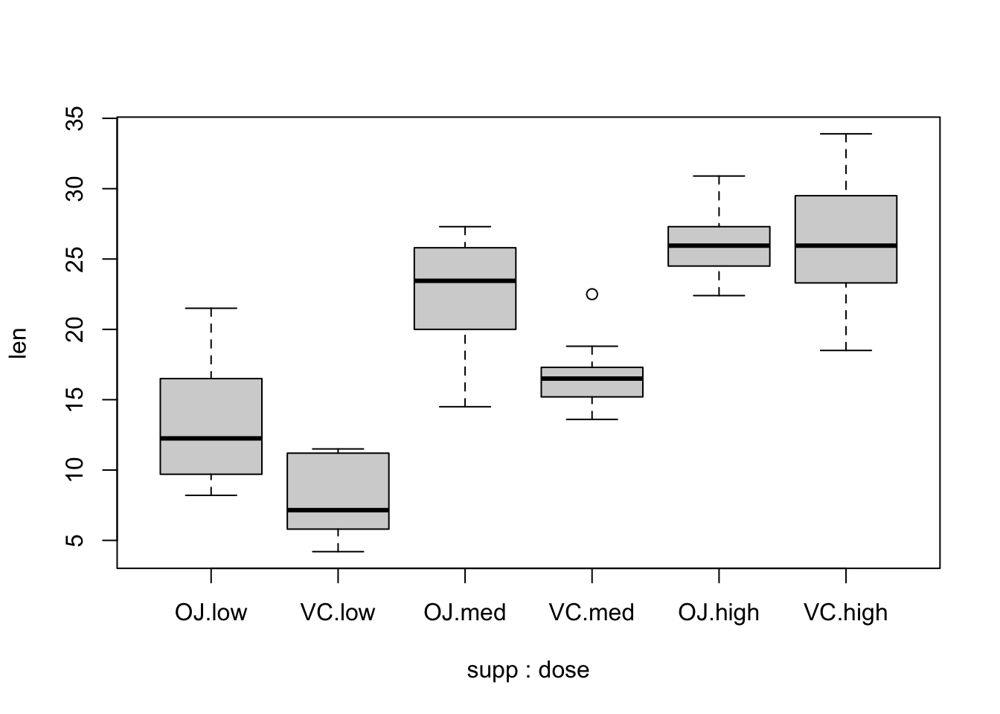

The solution can be found here.
An experiment is designed to test the tensile strength of Portland cement. Four different mixing techniques that can be used economically are tested and the resulting tensile strength is measured. A completely randomized experiment was conducted with four replications for each mixing technique and the following data were collected
data <- data.frame(mixingType = as.factor(rep(x = LETTERS[1:4], each = 4)), strength = c(3129, 3000, 2865, 2890, 3200, 3300, 2975, 3150, 2800, 2900, 2985, 3050, 2600, 2700, 2600, 2765))
data## mixingType strength
## 1 A 3129
## 2 A 3000
## 3 A 2865
## 4 A 2890
## 5 B 3200
## 6 B 3300
## 7 B 2975
## 8 B 3150
## 9 C 2800
## 10 C 2900
## 11 C 2985
## 12 C 3050
## 13 D 2600
## 14 D 2700
## 15 D 2600
## 16 D 2765Do boxplots for the tensile strength as a function of treatment. Comment on what you observe.
Calculate summary statistics for the different treatments. Comment on the values for the variance.
Do an analysis of variance table and test whether the mixing techniques have an effect on the tensile strength. Use level \(\alpha = 0.01\) for this test. What are your conclusions?
What are the estimated values for the average values for the four treatments \(\hat{\mu} + \hat{\tau}_i\), \(i = 1, \cdots, 4\)? What are the estimated values for the effects \(\tau_i\), \(\forall i\)? Use model.tables() for this.
What are the estimated values for the variance \(\sigma^2\) and standard deviation \(\sigma\) of the experimental error?
Make residual plots for checking assumptions. Do you think the usual assumptions for the model are reasonable in this experiment?
So far we have judged whether variances are uniform across treatment levels using graphs but there is a test for this, known as Levene’s test. This test is available in the car package as leveneTest(), with argument the result of an lm() model. Use this test to determine whether variances are homogeneous across mixing techniques.
Use the Shapiro-Wilk test for normality on the normalized residuals.
Do pairwise comparisons using Tukey’s Honest Significant Difference method. Plot the confidence intervals. What comparisons are significant according to this method?
If you had to choose a mixing technique, which one would you choose and why?
For this exercise, we will use the data set InsectSprays, which is available in R. In this experiment, 6 different insecticides were used and the number of dead insects in each plot were counted. There were 12 replications for each treatment level (insecticide), for a total of 72 observations.
head(InsectSprays)## count spray
## 1 10 A
## 2 7 A
## 3 20 A
## 4 14 A
## 5 14 A
## 6 12 ADraw a boxplot for the results and add axes labels and a title. Add the points for each treatment level. Observe that there is overplotting. Add some noise in the horizontal direction to avoid this problem. Comment on what you observe.
Do an analysis of variance and test whether the different insecticides have an effect. Use level \(\alpha = 0.01\) for this test. What are your conclusions?
What are the estimated values for the average values for the six treatments \(\hat{\mu} + \hat{\tau}_i\), \(i = 1, \cdots, 6\)? What are the estimated values for the effects \(\tau_i\), \(\forall i\)? Use model.tables() for this.
What are the estimated values for the variance \(\sigma^2\) and standard deviation \(\sigma\) of the experimental error?
Make residual plots for checking assumptions. Do you think the usual assumptions for the model are reasonable in this experiment?
Use Levene’s test for equal variances and Shapiro-Wilk for normality using this model and comment on your results.
Consider an alternative model using the square root of the number of counts. Obtain the analysis of variance table and compare with the previous model.
Draw the diagnostic plots for this model and comment.
Again, use Levene’s tests and Shapiro-Wilk and comment on your results
For this exercise, we will use the data set ToothGrowth, which is available in R.
Explore the data in ToothGrowth.
dose is a numerical variable and we would like it to be categorical. Transform it to a factor. Make sure to preserve the order.
Do a boxplot with the following command and comment on the result.
boxplot(len ~ supp * dose, data = ToothGrowth)
Use interaction.plot() to explore possible interactions between the factors.
Use lm() to build and analyze a two-way model.
Use aov() to build and analyze a two-way model.
Plot the diagnostics graphs and comment on the results.
Use TukeyHSD() with the option which = c('dose'). Comment.
Fit a model without interactions using lm() and compare with the complete model using anova. What is your conclusion?
For this problem, download (and read) the problem4.csv file here.
data <- read.csv('others/problem4.csv', header = T)
data$A <- as.factor(data$A)
data$B <- as.factor(data$B)
data$C <- as.factor(data$C)Look at the structure and explore the data.
Using lm() fit a complete model to this data.
Plot the interactions and comment.
Using update and a critical p-value of \(0.05\), remove all interactions that are not significant. After removing each term, produce a new ANOVA table to decide on the next step. What is the minimal adequate model?
Compare your final model with the complete model using anova(). Is it satisfactory?
Plot the diagnostics graphs and comment on the results.